|
|
Lesson Contents | In this Lesson, we will discuss how to create and configure the Properties and Options for a Knowledge View. |
So far, we’ve built a Form and a Process Timeline, along with some Business Rules that govern the way our application works. So, we have everything we need to get the required process data into our application. Now, we need to have some way to get that data back out of our application. That’s where Knowledge Views come in.
Knowledge Views are the basic reporting component of Process Director. All information stored in Process Director can be displayed in a Knowledge View. Knowledge Views can be used to display data in a tabular format to your users in a dashboard or Workspace.
For this lesson and the next, we will use the Knowledge View feature to create a Knowledge View that will display only the Change of Major Requests that are actively running on the system.
Before we create a Knowledge View, we need to create a Knowledge Views folder. Let’s navigate to the Student Exercise folder, then select Folder from the Create New… dropdown menu. In the New Folder dialog box, name the folder “Knowledge Views”, then click the OK button to close the dialog. Doing so will place us inside the Knowledge Views folder.
Let’s create a new Knowledge View by selecting Knowledge View from the Create New… dropdown menu. This will, as always, open the New Knowledge View dialog box. Let’s name the new Knowledge View “Active Change of Major Requests”, then click the OK button to close the dialog and open the new Knowledge View definition.
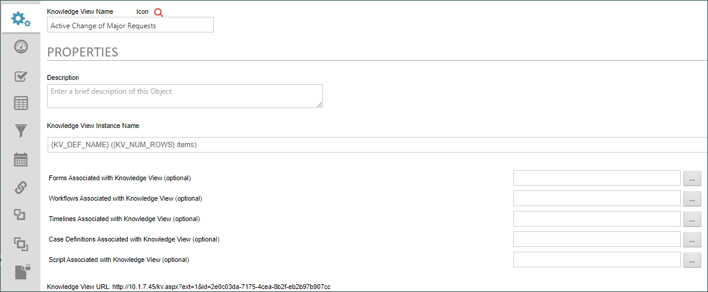
Knowledge Views, as mentioned previously, can return any information stored in process Director. In fact, a Knowledge View wants to return everything it can, every time it runs. Even though we haven’t made any configuration changes to this Knowledge View it already works. We can actually run it immediately, and when we do, we can see that it returns as much data as it can, based on the default configuration that was created with the Knowledge View. As implementers, our job is to narrow the data the Knowledge View returns to us, so that we only see the relevant data that we want to see.
As you can see Knowledge Views have a number of configuration tabs, but for now, we only care about four of the tabs: The Properties, Options, Columns, and Filter tab. That isn’t to say that the other tabs aren’t important—they are—but for now, we’ll concentrate on these four tabs. In fact, for this lesson, we only want to concentrate on the first two tabs: the Properties and Options tabs. We’ll address the remaining tabs in the next lesson.
The Properties tab is where we first start narrowing down the data that the Knowledge View will display. Notice that, on this tab, there are a number of properties that enable us to associate the Knowledge View with a specific Form or Process Timeline. Most of the time, you will display Knowledge Views to end users that enable them to open up specific form instances. The first step in that process is identifying the Form Definition that creates the form instances.
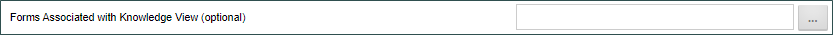
In this case, we only want our Knowledge View to return instances of the Change of Major Request form. To do so, we will click the Build button for the Object Picker of the Forms Associated with Knowledge View (optional) property.
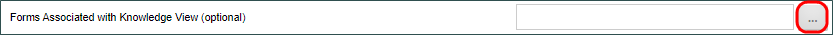
Once the Choose Form dialog box opens, we can navigate to our Change of Major Request form, and specify the form definition by clicking on it.
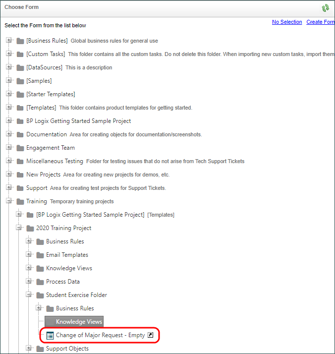
When we do, the dialog box closes, and we can see our form in the Object Picker’s text box.
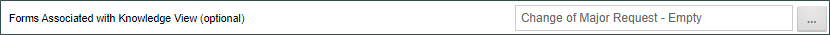
Let’s save our change by clicking on the Update menu from the button menu in the top right corner of the screen.
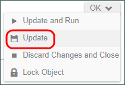
We can also save and run the Knowledge View by selecting the Update and Run menu item from the button menu. This will automatically save any configuration changes we’ve made and will open the running Knowledge View.
When the Knowledge View runs, note that there are no form instances displaying for any form other than our Change of Major Request, though we do see a number of other objects appearing. Still, we’ve completed the first step in narrowing the focus of our Knowledge View.
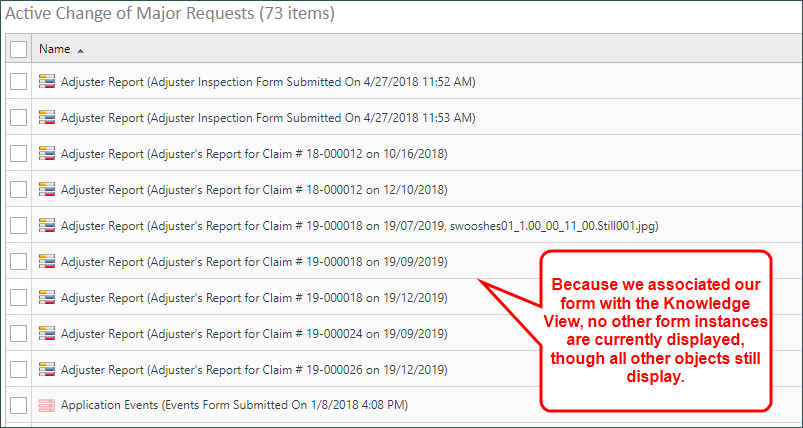
To perform the next step, let’s re-open the Knowledge View definition, by clicking on the Active Change of Major Requests node that is displayed on the left side of the Content list. Before we do, note that the running Knowledge View we’re looking a now is also shown on the Content List with the text “run” next to the name in parentheses. The definition does not have this “run” text. That’s how we can tell the definition from the running Knowledge View.
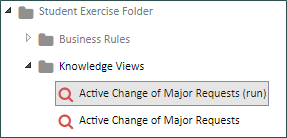
Once you click on the Content List node for the Knowledge View definition, the definition will open, and we can navigate to the Options tab.
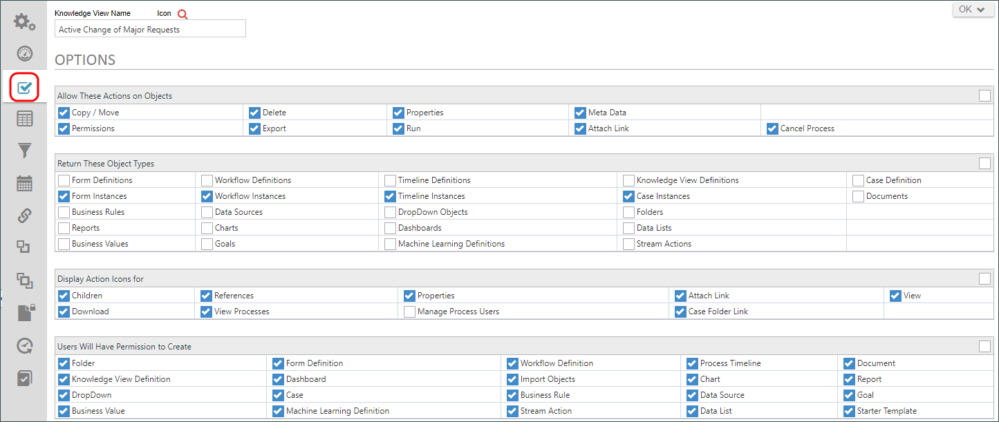
On the Options tab, we are primarily interested in the section labeled Return These Object Types. This section specifies the type of objects we want to return. In this case—as in most cases—we only want to return Form Instance, so let’s uncheck the boxes for Workflow Instances, Timeline Instances, and Case instances.
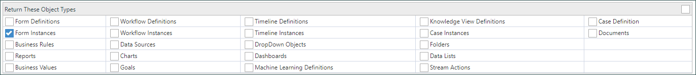
Now, the only objects that the Knowledge View should return are the form instances for our Change of Major Request form. Let’s check our work to see if that’s true by selecting Update and Run from the button menu. Once we do, the only objects that should display are the Form instances for the Change of Major Request form.
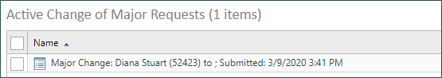
By the way, if we want to view any of those form instances, all we have to do is click on the instance name. We can view the form instance, and simply close it once we’re done. Closing the form instance returns us to the running Knowledge View.
And this point, we’ve created a new Knowledge View, and narrowed it down to seeing just the form instances for the Change of Major Request form. There’s still some work to do, though, which we’ll address in the next lesson. But, before we end this lesson, take a look at the columns that are displayed n the Knowledge View. These are default columns, and, as you can see, most of them—other than the name—aren’t particularly useful. In the next lesson, we’ll look at how to change the columns that we display, and also how to narrow the record the Knowledge View returns to just those requests that are currently active.
For now, though, you can close the running Knowledge View and return to the Knowledge View definition by, once again, using the Content List to navigate to the definition.